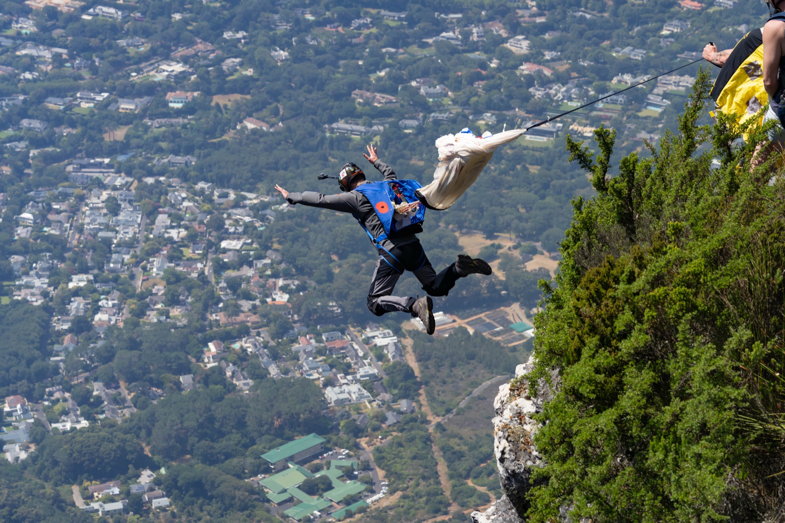
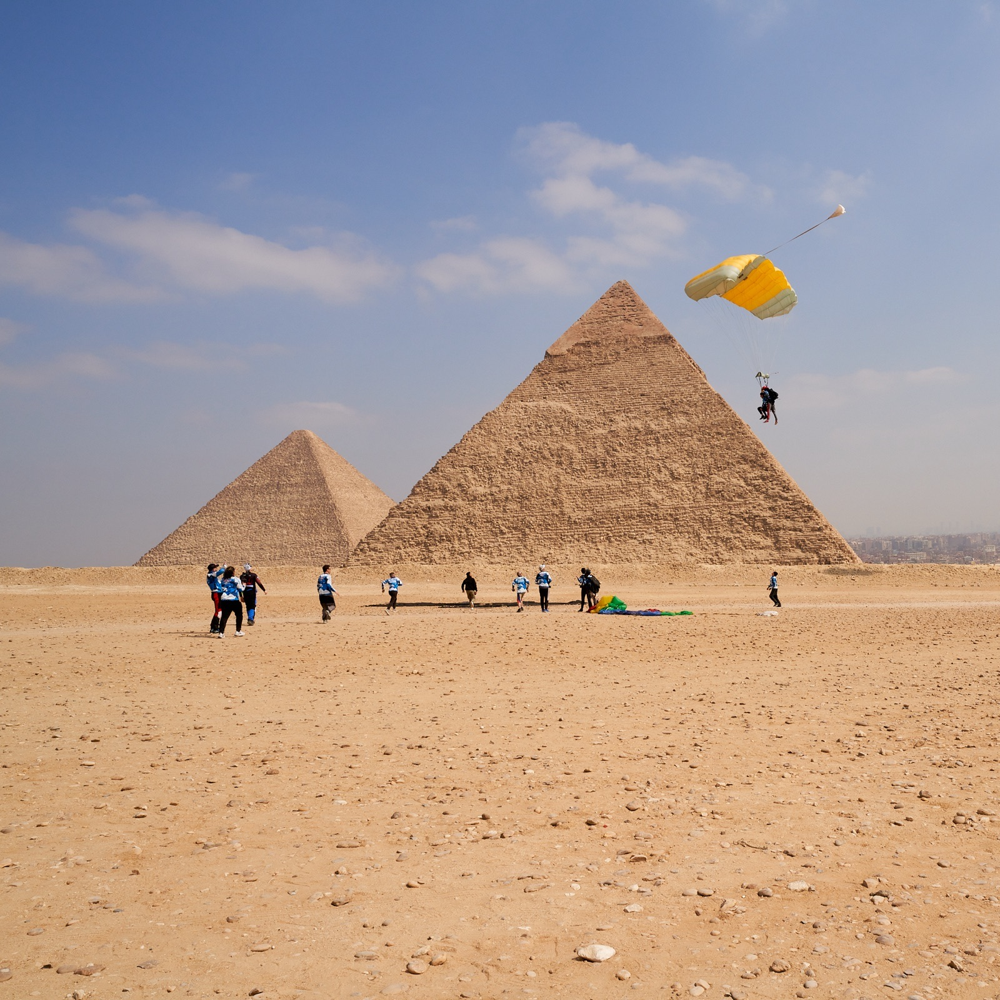
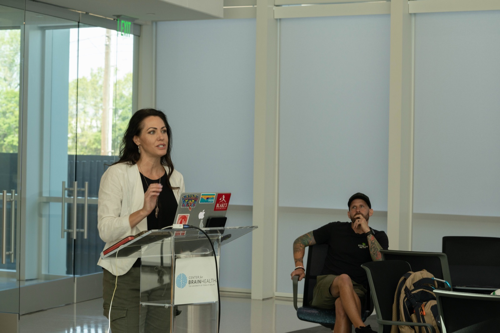
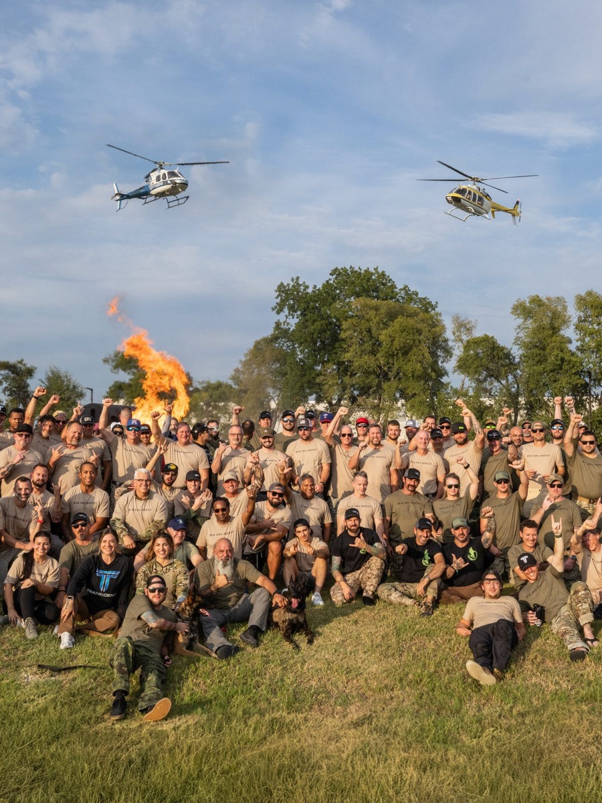
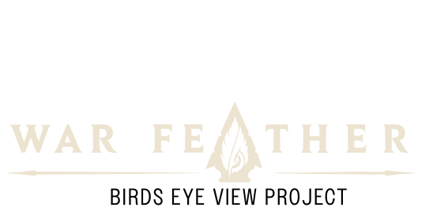

the mission had outgrown the brand.
So we rebuilt the system around it.
A decade of impact, with no clear way to understand it.
Organize the brand around the mission, not the activity.
Strategy, identity, website, CRM and conversion paths.
Applications filled in a week. Participation, donations and traffic moved.
ten years of impact. no clear way to understand it.
Birds Eye View wasn’t short on substance. It had a decade of programs, documentaries, events, fundraising initiatives and stories. The problem was that visitors had to assemble those pieces themselves.
The brief started as a website redesign. The website was only showing us the larger problem.
What is this?
Why does it matter?
What should I do next?


- 7X Human Performance Project
- Extreme-sport fundraising
- Documentary projects
- Events and volunteer programs
- War Feather
stop organizing the brand around activity. organize it around the mission.
We rebuilt the experience around two people. That sounds simple. It changed almost everything.
Supporting Birds Eye View stopped being a donation button tucked into the navigation. It became another way to participate in the mission.
participants
Veterans, first responders and law enforcement looking for support, community and a path forward.
supporters
Donors, volunteers and partners looking for a meaningful way to back the mission.
it couldn’t look like a charity. because it doesn’t behave like one.
The visual system became harder, simpler and more functional. Black and bone. Direct typography. Documentary imagery. Orange used with purpose.
Nothing sentimental. Nothing ornamental. The identity had to feel credible to the people Birds Eye View serves before it ever felt clever to a designer.

the organization

the flagship programa website wasn’t enough. every path needed somewhere to go.
The digital experience connected the brand and story to the infrastructure underneath it: applications, donations, event registration, Neon CRM, volunteer pathways, documentaries, campaigns and attribution.
The objective wasn’t more functionality. It was fewer dead ends.

clarity created action.
The result wasn’t simply a more modern website. People understood the organization differently. Then they behaved differently.
the organization didn’t need a new story. it needed the existing one to finally make sense.
view the live siteBrand strategy · positioning · identity · UX · digital strategy · development · CRM and conversion infrastructure
 →
→